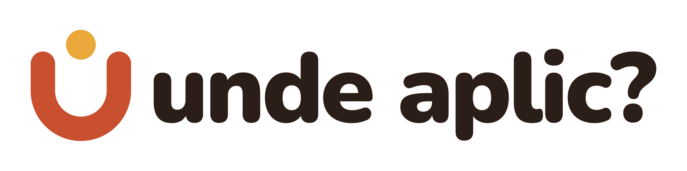
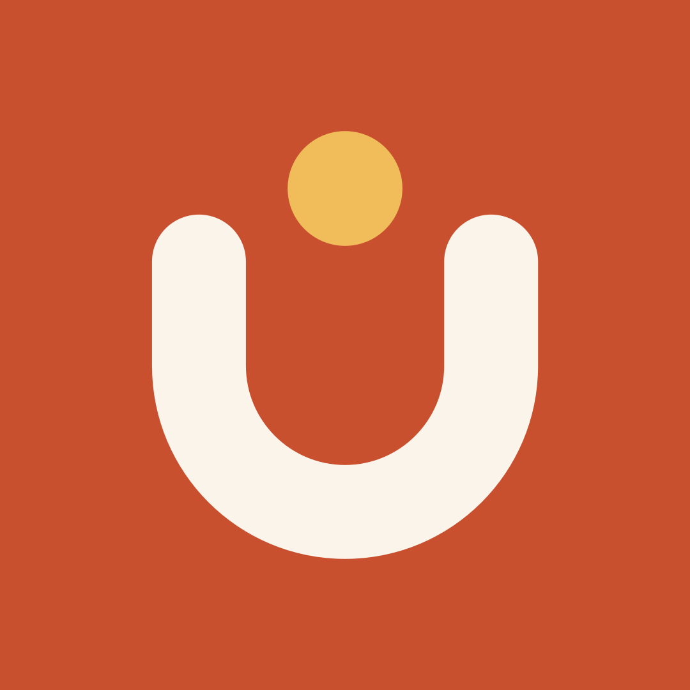

Logo și materiale
Tot ce îți trebuie ca să vorbești despre Unde Aplic?: logoul, poza de profil și postările gata făcute.

Logoul, complet
Pe orizontală și pe verticală, semnul singur, în 4 variante de culoare, SVG și PNG transparent. Plus favicon și iconița de aplicație.
Descarcă tot (ZIP) Doar logoul (SVG) Doar logoul (PNG)


Poza de profil
Semnul pe cărămiziu, 1080 × 1080 px, pentru Facebook, Instagram și LinkedIn.
Descarcă (PNG)

Postări și coperți
Imaginea de distribuire, trei postări (1080 × 1350 px) și coperțile pentru LinkedIn și Facebook.
Descarcă tot (ZIP)Te rugăm să nu întinzi, să nu rotești și să nu recolorezi logoul. Culorile: cărămiziu #C9502F, muștar #E8A93A, maro #2B1D17, crem #FBF4EA. Fontul: Nunito.